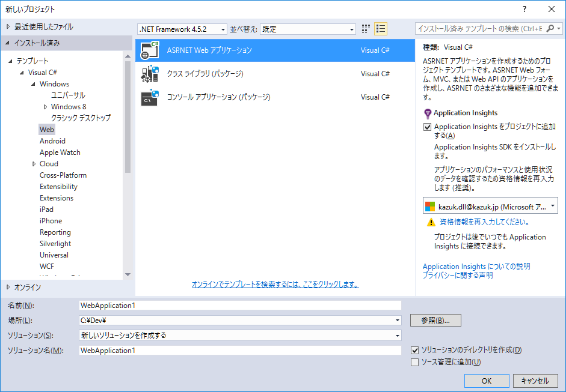
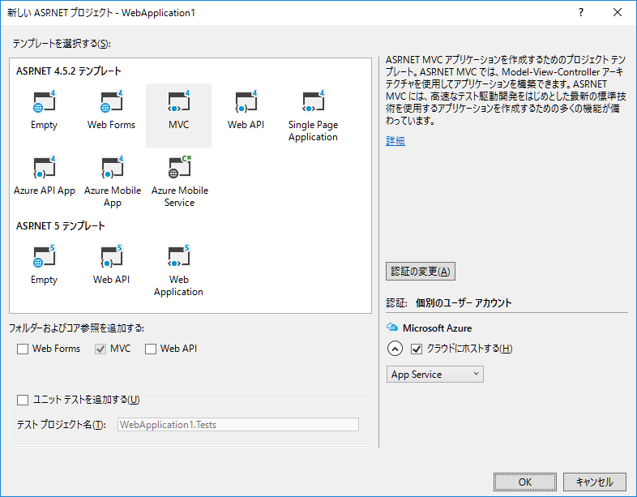
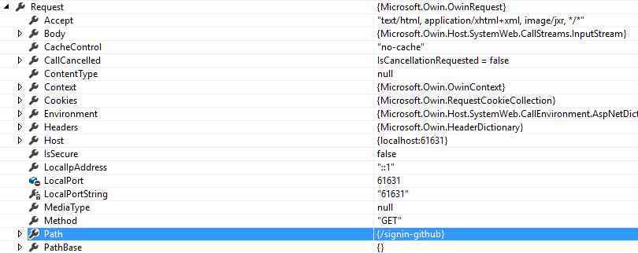
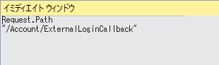

Github って便利ですねー、すごく便利ですねーと。
便利な物なのでもっと便利に使いたいとか思うのは人の常、欲のなせる業であります。
Github の API を呼ぶ事で日常タスクを自動化したいとか、欲張り始めると必要になる API 呼び出しの為のトークンの取得の仕方ですが、OAuthでの認証を通すサンプルは多いのですが肝心のトークンをとる例がほとんどなかったりします。
というわけで、OAuth 認証を通してトークンを取得してユーザーの権限で API を呼び出すまでについて書いてみます。
記述にあたって利用した環境です
ここでの説明は基本的には 「Owin.Security.Providers」 パッケージの導入手順です。細かいことは OWIN OAuth provider for GitHub を参照してください。
Visual Studio でプロジェクトを作成します。
Web 配下の「ASP.NET アプリケーション」を選択します。

「ASP.NET 4.5.2 プロジェクトテンプレート」から「MVC」を選択しプロジェクトを作成します。(Azure でのホスティングをするかしないかとかは好きにしてください。)

NuGet パッケージの管理の GUI からやるか、パッケージマネージャーコンソールからやるかは好きにしていいですが、「Owin.Security.Providers」のパッケージを導入します。
PM> Install-Package Owin.Security.Providers
'.NETFramework,Version=v4.5.2' を対象とするプロジェクト 'WebApplication1' に関して、パッケージ 'Owin.Security.Providers.1.26.0' の依存関係情報の収集を試行しています
DependencyBehavior 'Lowest' でパッケージ 'Owin.Security.Providers.1.26.0' の依存関係の解決を試行しています
パッケージ 'Owin.Security.Providers.1.26.0' をインストールするアクションを解決しています
パッケージ 'Owin.Security.Providers.1.26.0' をインストールするアクションが解決されました
パッケージ 'Owin.Security.Providers.1.26.0' をフォルダー 'c:\users\kazuk\documents\visual studio 2015\Projects\WebApplication1\packages' に追加しています
パッケージ 'Owin.Security.Providers.1.26.0' をフォルダー 'c:\users\kazuk\documents\visual studio 2015\Projects\WebApplication1\packages' に追加しました
パッケージ 'Owin.Security.Providers.1.26.0' を 'packages.config' に追加しました
'Owin.Security.Providers 1.26.0' が WebApplication1 に正常にインストールされました
PM>
Github にログインし、右上の自分のアイコンから「Settings」、左のリストから「Applications」を選択しタブから「Developer applications」を開き「Register new application」でアプリケーションを作成します。
重要なのは「Authorization callback URL」です。localhost上でテストする場合には 「http://localhost:アプリケーションのデバッグポート/signin-github」を指定します。あとは適当でいいです。
Register application をすると右側上のほうに Client ID、Client Secret がそれぞれ表示されますので、これをとっておいてください。
（もろもろスクリーンショット割愛）
「App_Start/Startup.Auth.cs」に以下を追加します。
冒頭、using のリストに
using Owin.Security.Providers.GitHub;
ConfigureAuth の末尾にて app.UseGithubAuthentication の呼び出しです。
app.UseGitHubAuthentication(
ConfigurationManager.AppSettings.Get("GithubClientId"),
ConfigurationManager.AppSettings.Get("GithubClientSecret") );
自分は web.config の appSettings 配下に置いたのでそれを読むコードをさらすのは何も問題ありませんが、Client Id / Client Secret の管理は慎重に
まず、NuGet.org の Owin.Security.Providers に行き Project Site を手繰って RockstarLabs/OwinOAuthProviders(github)を readme や wiki とかにドキュメンテーション無いか探しましょう。（ありません）
無駄な事をさせているわけでなく、手順です、次は Search ボックスで欲しいものを指定して探します。「github token」での検索結果で2つめの結果がドンピシャですね。
GitHubAuthenticatedContext の AccessToken を参照すれば良いわけです。
あとは検索で芋ずるです。 GitHubAuthenticatiedContext は GitHubAuthenticationProvider の OnAuthenticated に渡される。 GitHubAuthenticationProvider は Options.Provider にある、Options は UseGitHubAuthentication に渡せる。
すでに記述済みの app.UseGitHubAuthentication に繋がりましたのでめでたしめでたしです。 Options を渡す呼び出しに変えればトークンを取得するまでは一直線です。
トークンを取得したまではまぁ良いです。ユーザーのプロファイルにそれを入れたいとして Github が認証を通しただけでまだローカルのユーザーの誰なのかも良く分からない段階です。トークンをユーザーに紐づけて保存する場所まで何らかの手段で持ち回る必要があるでしょう。
OAuth を知っている人ならまず無理と分かる方法ですが、OWIN の Context に乗せてみましょう。ユーザーと Github 、ASP.NET MVCや ASP.NET Identity、OWIN がどのような動きをするのかを把握するには間違った手段でもコードにしてみてブレークポイントを設定して動かすのが重要です。
ブレークポイントを設定するのは OwinContext へ設定する場所と、AccountController の ExternalLoginCallback です。
ExternalLoginCallback は OAuth 認証されたユーザーの情報を取得する AuthenticationManager.GetExternalLoginInfoAsync の呼び出しと、それを内部ユーザーの認証に紐づける SignInManager.ExternalSignInAsync の呼び出し、および内部ユーザーが居なかった場合の登録への遷移を含む OAuth での認証の後半の殆どを担っていますのでここにトークンが渡らなければとれる意味も無い、ここにトークンが渡る方法を考えるべきということです。
OwinContext への値の設定をする OnAuthenticated ハンドラを持つ GitHubAuthenticationOptions の設定は以下の通りです。
var options = new GitHubAuthenticationOptions()
{
ClientId = ConfigurationManager.AppSettings.Get("GithubClientId"),
ClientSecret = ConfigurationManager.AppSettings.Get("GithubClientSecret"),
Provider = new GitHubAuthenticationProvider
{
OnAuthenticated = Authenticated
}
};
app.UseGitHubAuthentication(options);
呼ばれる側のAuthenticated は以下
private Task Authenticated(GitHubAuthenticatedContext context)
{
context.OwinContext.Set("accessToken", context.AccessToken);
return Task.FromResult(0);
}
OwinContext から値を取得するには Context.GetOwinContext().Get<string>("accessToken") でいいでしょう。
実際として取れません。
なぜ取れないのか。注目するべきはそれぞれの Request の URL でしょうか。
まず Authenticated での OwinContext から Request を確認します。
GitHub 側へ OAuth の設定で入れた Callback アドレスになっている事がわかります。
ExternalLoginCallback で Request.Path を見てみると
/Account/ExtenalLoginCallback になってました。 OWIN / KATANA の OAuth の Callback 処理の突っ込みどころというか盛大に勘違いしやすい所がこれですCallbackの処理で Token を Middleware が取って AccountController.ExternalLoginCallback に処理が回って来るのではなく、別のリクエストとして飛んでくるわけです。
msc {
b [label="Browser"], s [label="Server"], g [label="Github"];
b->g [label="login"];
g>>b [label="redirect /signin-github?--token--"];
b->s [label="GET /signin-github"];
s>>b [label="redirect /Account/ExternalLoginCallback\nSet Cookie"];
b->s [label="GET /Account/ExternalLoginCallback\nCookie"];
}
結果として、別のリクエスト＝別のコンテキストです。 Context を通しては値のやり取りはできません。
別の手段を考えなければならないでしょう。
ここで二つのロジックが別の世界、「OWIN な Middleware」と「ASP.NET MVCなController」に属しているので、ASP.NET のセッションは Middleware で使えないしCookieはブラウザやProxyから丸見えですので Access Tokenといったセキュリティセンシティブな物を乗せてしまって良いのか、そういったもろもろの事を考えてしまうと割と躊躇してしまいます。(するようにしましょう、お願いだから)
認証に関わる所の処理なので下手な真似をしたら死です、安全を期すために暗号化するとかもろもろを考えるのもいいですが、この OnAuthenticated と ExternalLoginCallback はユーザーの認証情報という安全を期すべきデータを受け渡すという意味で繋がっている部分です。十分に安全な経路がすでにあるはずなのです。
GitHubAuthenticatedContext には Identity プロパティがあり、ExternalLoginInfo には ExternalIdentity プロパティがあり、どちらも ClaimsIdentity になっています。
GitHubAuthenticatedContext に入ってくる ClaimsIdentity は GitHub での認証結果そのものですし、OnAuthenticated で解読された物は ExternalLoginCallback へ渡される為に暗号化がされています。([ドラフト]JSON Web Token (JWT) 8. 暗号化アルゴリズム)
この ClaimsIdentity を一連の認証処理中に安全に引き渡すのが OAuth の役割であり機能なのでここにデータを入れて受け渡すのは本質的に安全です。(あなたのサーバのセキュリティが守られていて、OAuthがちゃんと機能しているのであれば安全です)
ClaimsIdentity.AddClaim で適当なユーザー定義 Claim を作って ExternalLoginCallback で ExternalIdentity の Claim を取得すれば github の access token を安全に取り扱ったといえるでしょう。
private Task Authenticated(GitHubAuthenticatedContext context)
{
context.Identity.AddClaim(
new Claim( "exttoken", context.AccessToken ));
return Task.FromResult(0);
}
これを取り出す側は以下のようになります。
var githubToken =
loginInfo.ExternalIdentity
.Claims
.Single(c => c.Type == "exttoken")
.Value;
あとは Octokit を導入してクレデンシャルに token を設定して GithubClient を生成すれば API アクセスする事ができるでしょう。
private static IGitHubClient CreateGitHubClient(string githubToken)
{
ICredentialStore store = new InMemoryCredentialStore(
new Credentials(githubToken)
);
return new GitHubClient(
new ProductHeaderValue("YourAppName"),
store);
}